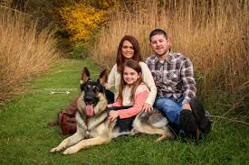

Henry is a devoted German Shepherd who personifies what it means to be a real friend. Henry has grown to be more than simply a pet since Kendrick brought him home as a puppy; he is now an essential member of the family. Henry is incredibly intelligent and devoted, and he and Kendrick have forged an unshakable relationship. Henry is a continual source of happiness and comfort, whether it's during his regular jogs with Kendrick or his morning routine of getting the newspaper.
Henry new found family

Henry's influence goes beyond simple friendship. His innate protectiveness is evidence of his intense devotion to and love for Kendrick and his family. Henry is constantly on the lookout for any possible threat when he and Kendrick go for walks in the park. But his lighthearted side is not diminished by this alertness. Henry is frequently observed having fun with other dogs, running after balls, and appreciating the small things in life in the park. He is well-liked in the community because of his ability to strike a balance between fun and protectiveness.
Henry is the embodiment of love and devotion at home. He loves to lay by the fireplace in his preferred seat, where he can always see Kendrick. Whether Kendrick is snuggled up at Henry's feet reading a book or the two of them watching TV with Henry's head resting on Kendrick's lap, their quiet times together reveal the closeness they have. Henry's constant presence provides protection and comfort, demonstrating the close bond that exists between a dog and his human family. Henry is an important part of Kendrick's life because of his unwavering love and loyalty, which are evident in every happy bark and wag of his tail.